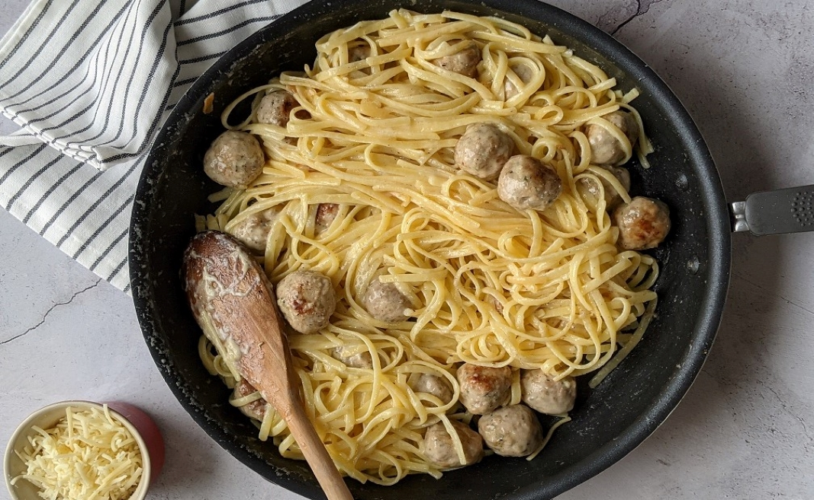

LUNCH ALFREDO
Bon Appetit! Take a photo and share this recipe!
| Ingredients |
| Quantity |
Ingredient |
Instructions |
| 1 lb |
ground turkey |
|
| 1 tsp |
kosher salt |
|
| ¼ tsp |
white pepper |
|
| 1 tsp |
fresh chopped rosemary |
|
| 2 Tbsp |
grated parmesan |
|
| 1 Tbsp |
minced garlic |
|
| 1 tsp |
Italian seasoning |
|
| 1/4 cup |
butter |
|
| 1 Tbsp |
olive oil |
|
| 1 Tbsp |
thinly sliced garlic |
|
| 6 portions |
cooked pasta |
|
| 1 cup |
Parmesan cheese |
|
| 1/2 cup |
cream |
|
| ½ tsp |
salt |
|
| ¼ tsp |
black pepper |
|
INSTRUCTIONS
- reheat your oven to 400°F.
- In a medium mixing bowl, combine the turkey with the salt, white pepper, rosemary, parmesan cheese, garlic, and Italian seasoning. Mix well.
- Wet your hands with cold water and roll the turkey in small balls using about 1 tbsp of the turkey mix for each ball. In total, you should get between 20 and 24 turkey meatballs.
- Put the meatballs in a roasting pan lightly coated with olive oil and cook in the oven for 15 minutes.
- Heat a large non-stick pan over medium-high heat. Add in the butter and olive oil. Once the butter melts and starts to foam, add in the turkey meatballs and cook for 2-3 minutes to brown the outside.
- Add in the garlic and cook for 1 minute, then add cooked pasta, parmesan and cream.
- Turn the heat down to medium-low and stir the pasta until all of the parmesan has melted and the sauce is creamy.
- Season the pasta with salt and pepper and serve.